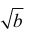
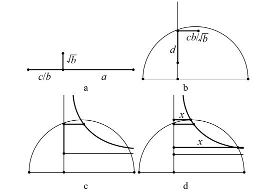

奥马尔·海亚姆求解方程x3+bx+c=ax2的方法
首先划出三条线段，使其长度分别等于c

、和a，并使长为的线段垂直于其他二线段（横轴），如附图a所示。为什么选择c 、 和a来作图呢？因为这三个量都具有和x相同的单位。如果x是长度，那么 c、 和a也都是长度。以直线c +a为直径画一个半圆，延长垂直线段 使其与圆弧相交（纵轴）。如果所延长的线段之长为d，那么，从它与半圆的交点处画一线段，使它与直线c +a平行，并且长度为cd / ，如附图b所示。第三步，做一条双曲线，使它通过在第二步中所加线段的端点，而且它的渐近线通过 线段的顶点与直径平行，如附图c。这条双曲线与圆弧在两点相交，焦点与纵轴之间的距离就是所求的解。

附图：奥马尔求解三次方程的几何方法示意。